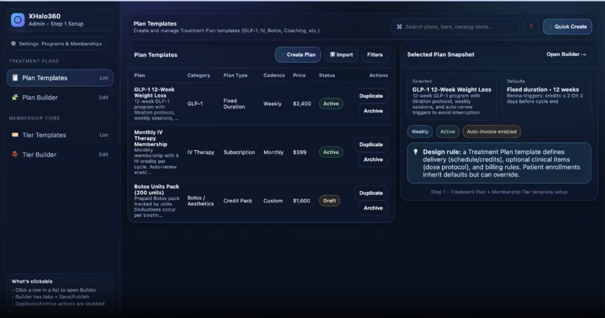
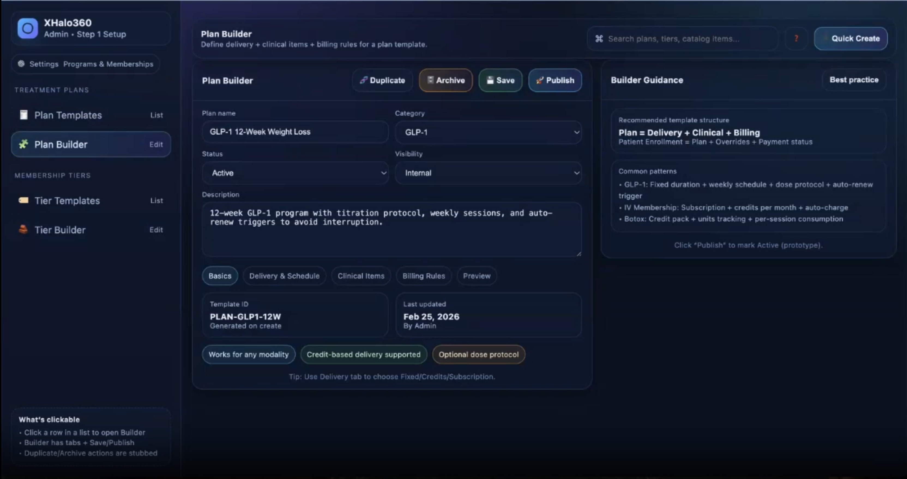
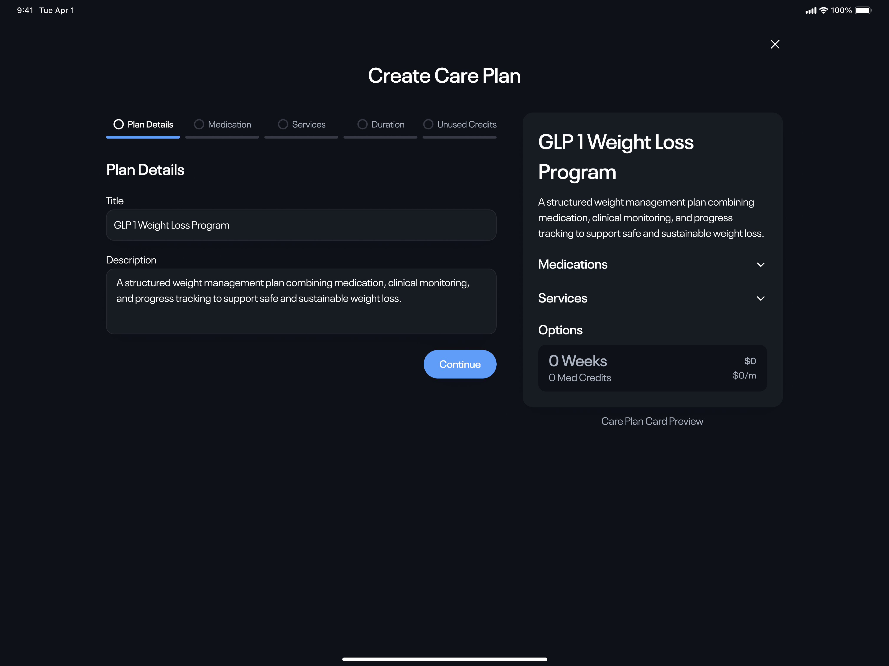
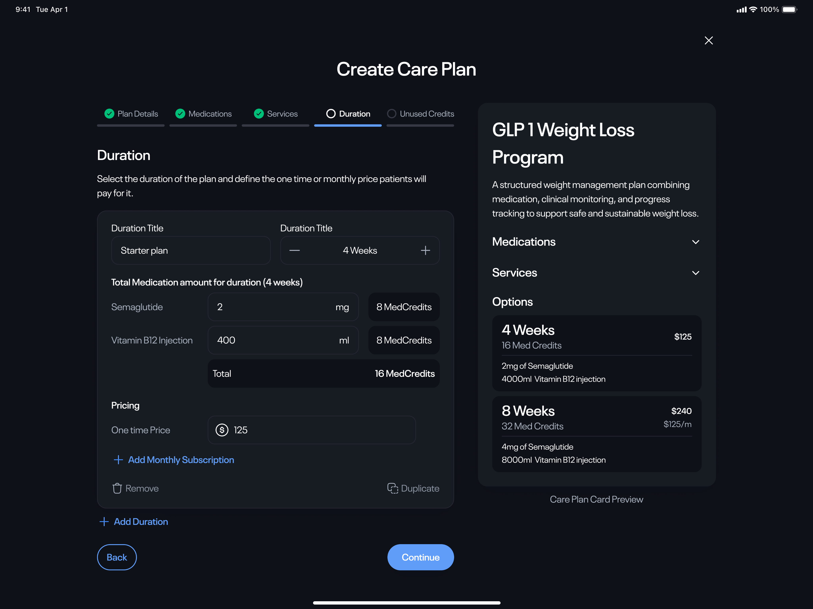
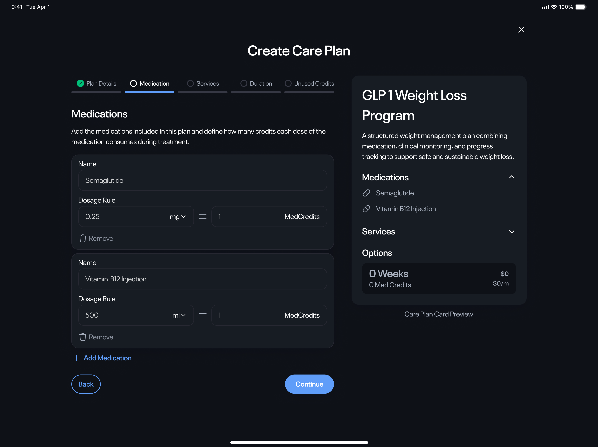
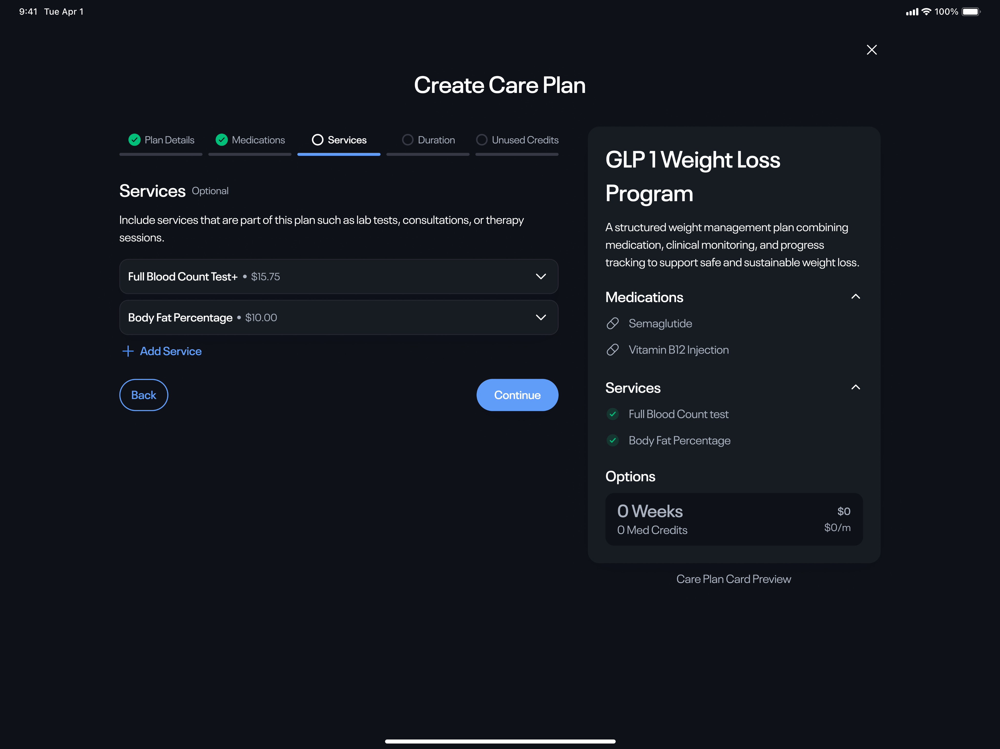
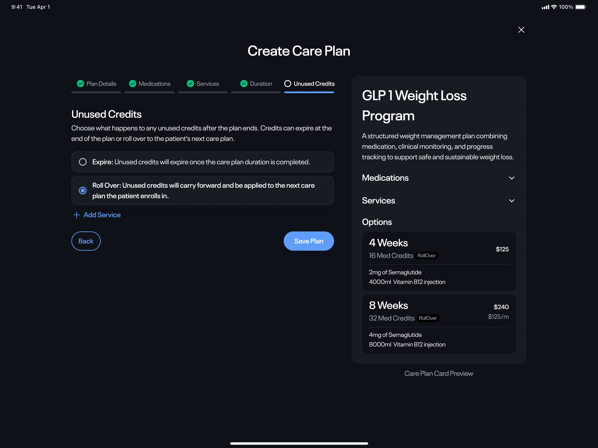
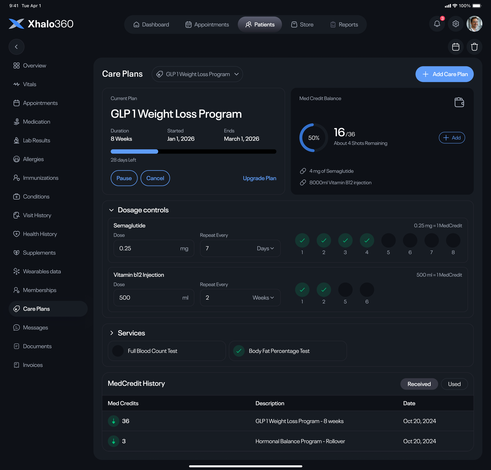
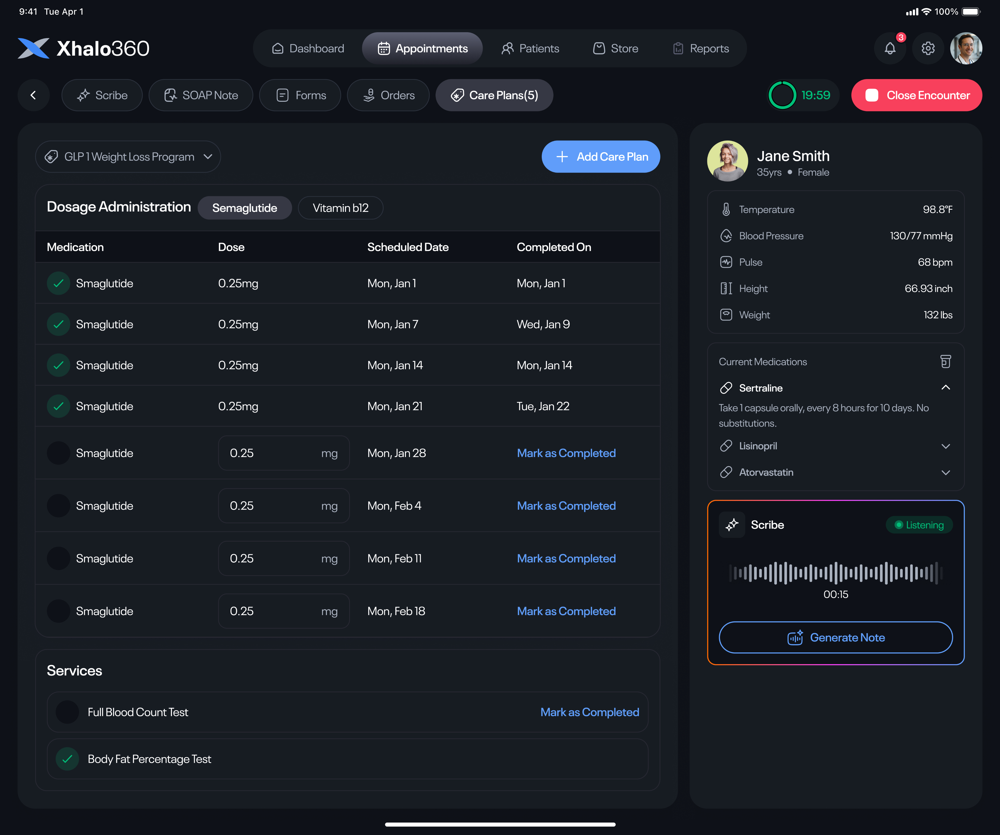

What was the project about?
Care Plans help clinics package medications, consultations, and services into structured treatment programs.
Every clinic runs those programs differently.
Some focus on weight loss. Others manage diabetes, physiotherapy, or long term care.
The platform needed one system flexible enough to support all of them.
The Problem
Care Plans don't stay the same from start to finish.
Doctors increase dosages, reduce medications, add services, or change treatment based on patient progress.
That raised difficult product questions.
- How should dosage changes affect billing?
- What happens to unused medication?
- How are multiple medications tracked?
- How can clinics build completely different treatment programs using the same system?
Starting Point
The project began with ideas gathered through discovery sessions, AI generated concepts, and competitor research. The business goals were clear. The workflows weren't.


Stakeholders' initial concepts outlined business needs but left many operational details unclear, needing more refinement.
Key Decision
Instead of creating separate rules for every medication and treatment, I introduced a shared credit model.
Each medication and service consumed a configurable number of medical credits.
That gave clinics the flexibility to:
- Increase or reduce dosages
- Support multiple medications
- Add new treatment types
- Handle unused balances consistently
One framework could support many different care programs.
Simplifying Configuration
The builder exposed a lot of flexibility.
Showing every option on one screen would have been overwhelming.
Configuration was broken into five focused steps, each introducing one concept at a time.
For common programs like GLP-1, clinics could start with templates instead of building everything from scratch.





Breaking configuration into smaller steps made a complex workflow easier to understand.

Care Plan screen displays plan details and enrolled members.
Beyond the Builder
Creating a Care Plan was only the beginning. Staff also needed to manage those plans throughout treatment.
From the patient profile they could:
- Enroll patients into Care Plans
- View remaining credits
- Track medications
- Review transactions
- Adjust future treatment

Care Plans became part of the patient's medical record.
Inside the Consultation
Doctors needed to confirm what was actually administered.
Bringing Care Plans into the consultation workflow allowed staff to:
- Record medications
- Increase or reduce dosages
- Track consultations
- Update remaining credits
- Keep billing aligned with treatment

Doctors could manage careplans while seeing the patient.
Design Decisions
Designed for different treatment programs
The system could support GLP-1, diabetes care, physiotherapy, and future programs without changing the underlying workflow.
Created a shared credit model
One consistent way to manage medications, services, pricing, and unused balances.
Separated setup from patient care
Administrators configure Care Plans once. Clinicians manage them during treatment.
Reduced cognitive load
Progressive disclosure and templates kept a complex configuration process approachable.
Impact
The final solution gave the platform a foundation for running treatment programs that extend beyond a single specialty.
Clinics could create their own Care Plans, manage changing treatments, and support different pricing models without requiring new workflows for every program.
The same framework could be applied to weight loss, diabetes management, physiotherapy, IV therapy, and future services as the platform evolved.